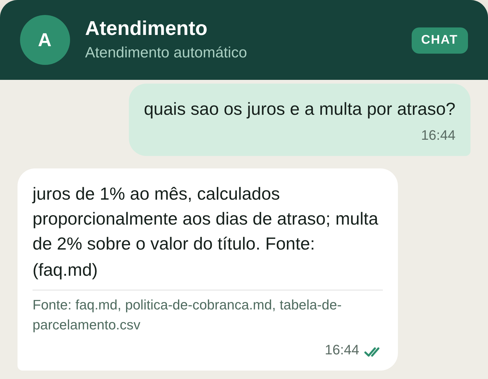
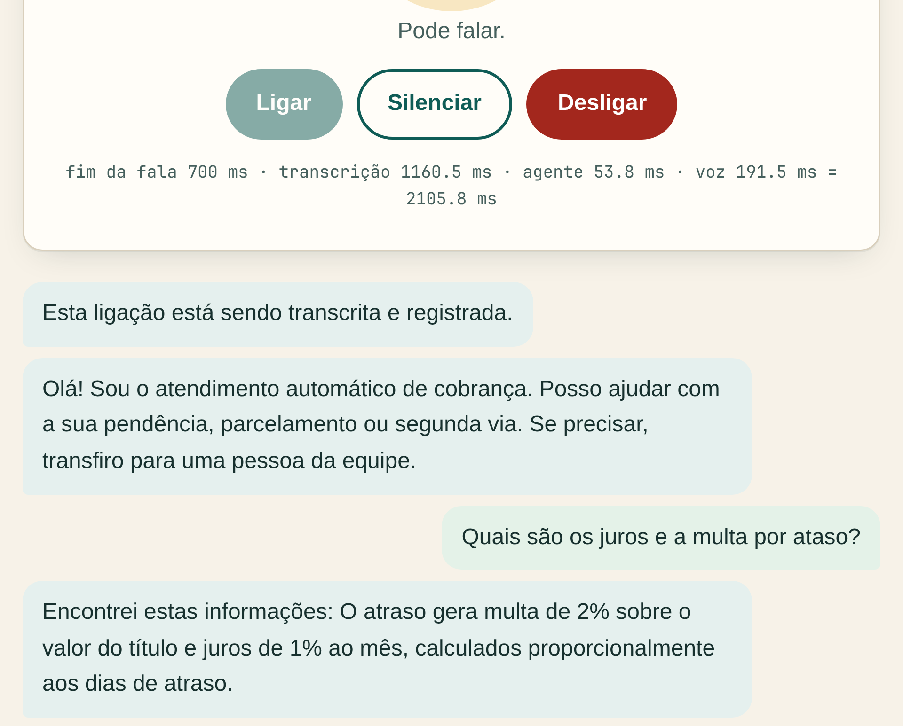
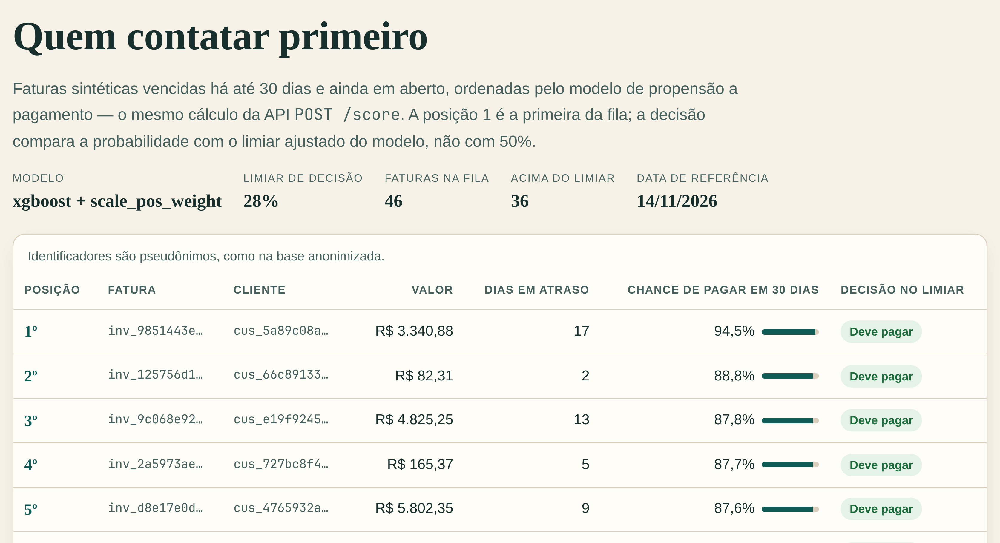

01Contexto e problema
Fonte: Serasa Experian, Indicador de Inadimplência das Empresas, dez/2025.
- Capacidade finita: sem priorizar, o esforço do operador vai para quem menos vai pagar.
- Cobrança regulada: horário, frequência e opt-out (CDC art. 42, LGPD).
- Soluções isoladas: risco, voz e atendimento não conversam entre si.
Um sistema multiagente com LLM, RAG e ML automatiza a cobrança, responsiva e proativa, e recupera mais crédito que abordagens convencionais?
02Solução proposta
03O sistema em uso



04Arquitetura em produção
05Resultados
06Engenharia
- 800+ testes automatizados (pytest)
- CI/CD no GitHub Actions, AWS via OIDC
- 6 ferramentas de análise: ruff, Semgrep, gitleaks, pip-audit, Trivy, zizmor
- Infraestrutura como código: Terraform na AWS
- Observabilidade: OpenTelemetry + Grafana
07Conclusões
- Sim, com uma condição: a predição recupera mais quanto mais escasso é o contato (+4,7 a +4,8 pp com 2 a 4 contatos/dia) e não muda nada quando dá para contatar todos.
- A automação reduz o custo e cumpre as regras de cobrança sem nenhuma violação.
- A voz é viável: a chamada responde em cerca de 2 s com as mesmas garantias do chat.
Limitações: só dados sintéticos e simulação, que mostram o mecanismo, não o valor de uma operação real.
08Acesse
Aponte a câmera e converse com o agente
09Referências
BRASIL. Lei nº 13.709/2018. Lei Geral de Proteção de Dados Pessoais (LGPD).
BRASIL. Lei nº 8.078/1990. Código de Defesa do Consumidor.
CHEN, T.; GUESTRIN, C. XGBoost: a scalable tree boosting system. Proc. 22nd ACM SIGKDD, 2016.
LEWIS, P. et al. Retrieval-augmented generation for knowledge-intensive NLP tasks. arXiv:2005.11401, 2020.
MORO, S.; CORTEZ, P.; RITA, P. A data-driven approach to predict the success of bank telemarketing. Decision Support Systems, v. 62, 2014.
RADFORD, A. et al. Robust speech recognition via large-scale weak supervision. arXiv:2212.04356, 2023.
REIMERS, N.; GUREVYCH, I. Sentence-BERT: sentence embeddings using Siamese BERT-networks. EMNLP-IJCNLP, 2019.
SERASA EXPERIAN. Indicador de Inadimplência das Empresas. Dez. 2025.
WANG, L. et al. A survey on large language model based autonomous agents. Frontiers of Computer Science, v. 18, 2024.